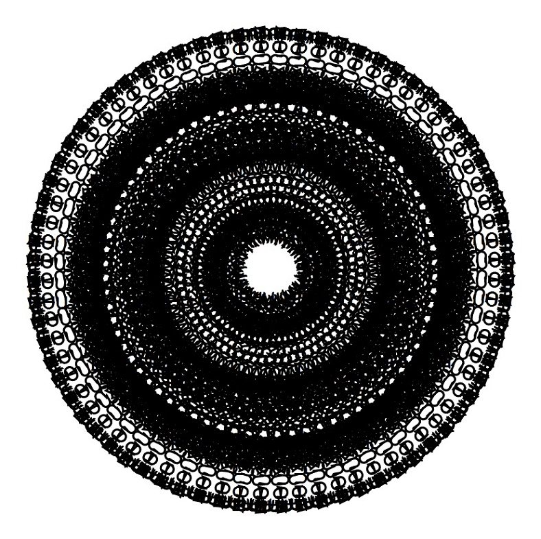

Это тяжелое во всех смыслах произведение. Но мужчинам нужное. Женщинам я его читать не рекомендую.
Свободная Воля свободна от "самого себя", т.е. от того, чтобы быть чьей-то собственной, принадлежать кому-то, поскольку любая принадлежность чего-то кому-то является фактом, закрепляющим точку сборки этого кого-то (чаще всего - намертво, и без возможности осознания, что это так) посредством используемой им самим "свободной воли" к тому, чтобы быть кем-то и чем-то, кому могут принадлежнать определенные свойства и качества, о ком можно сказать что-либо конкретно, выделив "собственные" от "не собственных" или тех, которыми он вовсе не обладает.
Выбрал - намеревая самого себя быть кем или чем угодно, кроме того, кто выбирает сам, кем и чем ему быть до того, как кем-то или чем-то действительно становится, приложив известную долю усилий и стремлений к достижению результата "здесь и сейчас". Но становясь (или, с точно таким же успехом, "не становясь") тем, тогда и таким образом, каким это за него намеревают другие - те, кто наиболее непосредственно открывал для него "этот мир" еще в то время, когда он сам не был его дееспособной и самостоятельной равноправной частью, - а находился под опекой общества этого мира, использовавшего "физических" опекунов, воспитателей и родителей, чтобы посредством них совершать выбор за него, в отношении которого у человека всегда была полная свобода воли: "выбрать жизнь", или же выбрать что-то другое, что "жизнью" точно не является. Воля эта проявляется так и тогда, когда это предусмотрено социо-психоэнергетическими процессами и системами внутри общества, в отношении которого человек осуществил в прошлом свободное волеизъявление, запретив себе помнить о том, что у него в жизни существовал этот конкретный судьбоносный выбор, в осуществлении которого он не руководствовался и не опосредовался в действии и решении никакими их возможных осмысленных форм целеполагания и осознания, поскольку все эти формы стали знакомы ему строго после и посредством принятия им этого решения, "вопреки самому себе", поскольку сам человек должен будет безропотно склонять голову, подчиняя свою свободную волю воле общества и его мнению, относительно того момента, когда у него действительно будет появляться возможность выбора того, что ему предлагают другие люди, либо возможность отказа от совершения такового выбора, поддерживая этим нехитрым трюком нерушимость собственной "слепой" веры в свою свободу, самостоятельность, уникальность и обособленность от той человеческой общности, которая его породила на Свет, которой он принадлежит даже не как раб, потому что раб знает о своем презираемом положении, а он нет: он будет всю жизнь уверен, что его собственный свободный выбор посредством независимого волеизъявления определил ту судьбу, которая у него имелась, хоть он и не способен ответить на вопрос, зачем она имелось у него, будучи чем-то лишенным признаков контролируемого стремления и достижения каких-либо мало-мальски выдерживающих объективную критику его же собственного разума, вынужденно освободившегося от розовых очков посредством близости прекращения непрерывного бесконечного и лишенного намека на осмысленность, самоунижения и самообмана самим человеком самого себя, поскольку в "анонимном контракте", подписанном в самом начале, об этом черным по белому было написано, и значит он сам выполнит требование пункта договора, перестав существовать и сдав "свое" осознания без претензии на память о чем-либо, в чем его собственной творческой самостоятельности не было нисколько (кроме пародии на таковую называемых у людей "творчеством", но являющейся, за редчайшими исключениями, таковым действительно не в большей степени, чем они сами, называя себя живыми, хотя бы мгновение в сознательной жизни испытывали, что значит быть живым на самом деле, а не потому что "я мыслю, значит существую" анонимного происхождения в силу строжайщего и жесточайшего запрета самому себе помнить о том, чей этот голос "свой собственный у него в голове" на самом деле является, и каким образом происходит столь существенная его формальная трансформация в его собственном восприятии "здесь и сейчас").
"Свобода" - это "глюк" рассудка, потерявшего адекватность Реальности в следствии "черезчур близкого знакомства с объектами сканирования". Реальность представляет Собой однородное Поле Энергии. Свобода в этом Поле имеется только в том, чтобы быть его неотъемлемой малюсенькой частью, получая возможность осознавать чувственным восприятием, следующим из принципиальной хрупкости и быстротечности своего существования, насколько это Поле огромно, совершенно, целостно, осознанно и абсолютно. И хотеть, в следствии этого, существовать в этом Поле находясь с Ним в гармонии. А Гармония у это Поля в том, и только в том, чтобы обеспечивать наилучшие условия развития и существования каждой из своих малейших собственных составляющих. Каждая из которых не существует ни отдельно от Поля, ни отдельно от остальных, подобных ей по способу и свойствам происхождения в нем, "братиков и сестричек".
Но в этой Реальности, в связи с имеющимся намерением реально достигать вышеописанной гармонии у каждой "собственных составляющих" частичек Поля, опосредованным безусловно Намерением Самого Поля давать частичкам эту Гармонию взаимообусловленного происхождения в Самом Себе, должно существовать нечто такое, что способно создавать для этих частичек реальные предпосылки к тому, чтобы к этой Гармонии стремиться и в ней нуждаться, ведь Само Поле непостижимо совершенно и осознанно, и немыслимо представить, будто Ему Самому по Себе чего-бы то ни было "не хватало", или внутри Него могла существовать какая-либо "неисправность" или "нереализованность", требующие совершать действия для своего восполнения для достижения какой угодно возможной и мыслимой Цели. Поэтому, Оно Само не может служить для каждой из своих "частичек" "опорной" или "стартовой" точкой, направляющим ориентиром, в процессе их стремления к достижению Гармонии собственного с Ней происхождения посредством чувственного опытного переживания такового "здесь и сейчас". Опорной точкой для этого стремления и достижения, должно служить нечто, обратное по своему качеству тому Совершенству, Которое у Поля есть "Само по Себе", поскольку Оно представляет Собой явление более высокого абстрактного порядка и качества "настоящести" бытия Собственной Реальности, чем любое из происходящих в нем частичек-явлений, восприятие и Реальность каждой из которых происходит на значительно более "примитивном" уровне, хотя он и "кажется" самим этим "частичкам" объективной Реальностью, как бы они ее не называли и в чем бы это для них не заключалось - пока они ощущают свое существование в чем-либо сущностно значимом для них субъективно, отдельно от Поля и других его составных частей, они "по определению" находятся не на уровне Реальности Самого Поля, Которая их произвела и производит (потому что другого "производителя" чего бы то ни было в этом Поле нет и быть не может в принципе в Силу Его сущностного Единства и Универсальности на Своем Собственном уровне Бытия, недоступном и "скрытом" на всем времени своего происхождения в Нем, от каждой из "частичек", существующих "внутри" каждая своего "Мира", "Судьбы", "Личности", "Сущности", и так далее, посредством "идеи себя", включенной в Реальность в виде Корня всей своей Жизни, то есть существования как явления или процесса, происходящего внутри этого Поля, демонстрирующего сохранение характерных черт своего происхождения со временем, причем, ясное дело, не таким же в точности образом, каким Поле происходит "Само по Себе", а таким, который позволяет, беря за основу эти проявляемые "рутинно" черты и качества, выделить эту частицу как существующее явление внутри Поля, имеющее собственное "Имя" (наименование), которому свойствены и для которого характерны определенные наблюдаемые и повторяемые обстоятельства своего происхождения в этом Поле. Причем, эти качества и это происхождение, по понятным, если чуть чуть вдуматься в вышеописанную модель, обязаны быть строго противоположными тем качествам, свойствам и чертам своего происхождения, которые имеются у всего остального Поля в Целом. Потому что если бы это было не так, то данная "частица" не получила бы Имя и наименование, просто потому что своим происхождением не позволяла быть определить свое отличие в чем либо от Поля как такового, являющегося Само по Себе целостным единосущным явлением, имеющим полную осознанность и абсолютную Волю сознательного самовоспроисхождения в Реальности, качественно превышающей категорию "реальности" любой из Своих составных частей.
Из вышеперечисленного следует несколько выводов, находящихся в видимом неразрешимом противоречии между собой, причем, таковые противоречия не являются надуманными результатами характера моделирования, не свойственными Реальности Мира, но являются как раз таки ключевыми аспектами или ньюансами, оказывающими значительное влияние на вид и характер существования действительности и жизни в ней каждого человека. При этом само их существование, не говоря уже о том особом образе своего разрешения, который они имеют и опосредуют, - человеку этого Мира не очевидно и контринтуитивно, поскольку основой его самосознания является аксиома собственной обособленной самостоятельности бытия и существования, что, в частности, находит свое отражение в неизменно высоком положении идеала стремления к личной Свободе, не важно, кем и как эта Свобода понимается и постулируется конкретно, насколько этот идеал "духовен", "абстрактен" или наоборот "материален" и "субъективен", - имеющемся у человека разумного, отнюдь не исключая многочисленные ряды "просветленных" "духовных идущих", "видящих", "безмолвных" и т.д. и т.п. Они все точно такие же люди, находятся в точно таких же условиях, и ничем, как можно понять по предлагаемой модели Реальности в настоящей статье, в частности, не выделяются в сущности среди всех остальных людей, в чем бы не заключалась между ними "наблюдаемая воочию огромная разница", потому что она существует только в нашем воображении, как и весь остальной последовательно воспринимаемый Мир.
Данная аксиома и опосредованные ею черты самосознания в людях, является прямым следствием описанной выше необходимости для каждого субьекта, существующего и стремящегося к Цели Гармонизации своего сущестования с той Средой, внутри Которой его жизнь и восприятия происходят и свойствами которой опосредованы и всецело обусловлены, - демонстрировать сущностно, т.е. являтся в самом деле, а не "играя в это и делая вид", свойства и черты происхождения, противоположные таковым, имеющимся и характерным для самой Системы как Целого. Причем, действуя так не по какой-либо, той или иной, осмысленной и сознательной, причине, а именно и только потому, что посредством этого происходит самоопределние его как самостоятельного явления, реально (ощущаемо, очевидно и характерно) существующего и имеющего право называться своим уникальным Именем Собственным.
Однако, - будучи вынужден основать базовый "модус вивенди" на противопоставлении себя по всем, в чем только возможно, породившей его к жизни и реально производящей его существование Самосущностной Единой Системе, просто в Силу факта своего происхождения с Ней посредством восприятия и внешне обособленного от Нее в своем собственном самоосознании себя и "реального мира" чувственно ощутимого существования в нем посредством "действия строго вопреки всей Вселенной, производимого ради самого действия как такового, чтобы посредством этого называться отличным от всей остальной Вселенной собственным Именем", то есть реально существовать и получать жизненный опыт восприятия здесь и сейчас, - осознав себя посредством мысли о себе, существующем реально и отдельно характерным и уникальным образом с определенной историей и накопленным опытом, - человек обнаруживает себя находящимся настолько далеко от своей собственной настоящей жизненной Цели, - то есть от собственного Пути Сердца, которое рано или поздно заставит человека себя слушать и слушаться, то есть начать искать Путь, насколько это только возможно.
Формально это уже должно быть понятно в рамках сформулированной модели Реальности - потому что самая форма, в которой человек, как "чувствующее воспринимающее существо", осознающее себя и разумно мыслящее, то есть способное к внешне автономному последовательному целеполаганию и последующему воплощению посредством имеющегося внешнего (по отношению к Цели и Намерения Своего непрерывного Самовоспроисхождения Единым Жизненным Полем, частью Которого человек реально является, но пока еще не способен осознанно участвовать в Его деятельности, в виду противоположности собственных свойств, то есть стремлений, намерений и действий) инструментария, включая "собственное тело", и любые опосредованные им инструменты и формы осмысленной деятельности, развиваемые и приобретаемые посредством опыта и личного воспитания и развития, характеризуемого самоинтеграционными процессами, создавшего и включающего человека в Себя, т.е. "состоящего из человека", общества себе подобных.
Сущностно - потому, что достижение Гармонии, являющееся таковой Целью, наследуемой от Намерения Единосущностного Духа относительно Своих "собственных составляющих частичек", означает приведение собственных реальных (а не искусственно имитируемых внешним образом) располагаемых стремлений, намерений и действий в процессе жизни человека, осознанно стремящегося к Ней, опосредуемой опытным происхождением его чувственного восприятия собственной Жизни "здесь и сейчас", в форму, которая имеется у Системы в Целом, т.е. у Единого Поля, посредством функционального противоположения себя Которому, человек имеет тот объем его личной судьбы и жизненной данности, который объективно имеет, и который позволяет ему осознавать себя и стремиться к чему либо целям осмысленно в принципе.
На самом деле все еще сложнее в этой "базовой" ситуации "первичного становления на Путь Сердца", начинающегося в точке завершения первичного становления на Путь Жизни, то есть воспитание и взросление взрослым адекватным самостоятельным и дееспособным членом общества себе подобных повседневного мира. Поскольку человек производил первичное действие становления самостоятельно существующим на предыдущем этапе, имеющим право называться, и активно этим Правом пользующийся по Жизни, собственным Именем, строго без осуществления в чем-либо осмысленного целеполагания в этом действии, как уже подробно описывалось выше, а значит - не обладает "физической возможностью" осознания себя совершающим это действие как таковое в принципе "в реальной действительности". Поэтому человек не способен даже попытаться каким-либо образом осмыслить и проанализировать ситуацию, в которой он находится в этот момент объективно и по собственной свободной воле, решив добровольно связать себя соглашениями с обществом этого мира, став его сознательной взрослой адекватной и дееспособной независимой равноправной частью, обладающей свободной волей ровно в том объеме, который опосредован таковым обладанием, фактически осуществляемым происходящими в непосредственной близости свободным волеизъявлением себе подобных, т.е. "ближних", родственников, знакомых, коллег, однокурсников, единомышленников, приятелей и так далее, совместно с ним пользующихся определенным объемом общей единой и неделящейся на Совем Собственном уровне качества Реальности Своего Существования, жизненной Силы и энергии, единственной Энергии, которой реально обладают люди (ДХ) - половой энергией, энергией порождения, также называемой Волей, Личной Силой, доступной каждому и каждой, но задействованной 99.9% времени жизни в неизменных формах своего проявления, опосредовавших для человека возможность быть тем, кем он привык осмысленно повседневно являться. И заблокировавших этим действием принципиальную возможность своего осмысления и осознания человеком как явления или события, могущего иметь реальность своего происхождения, каким угодно объективным образом в реальной действительности.
Интересо?